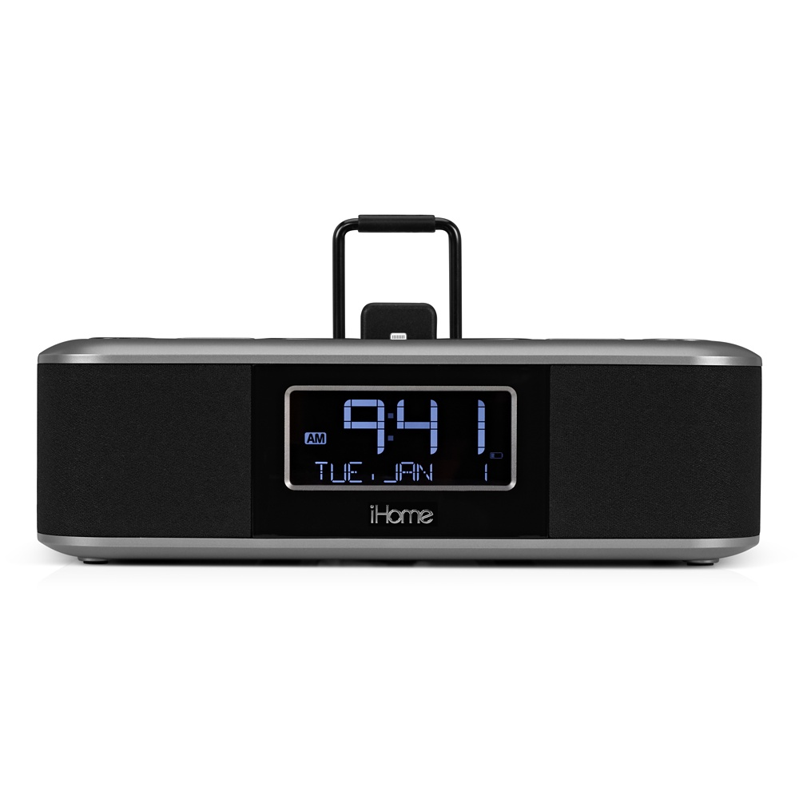
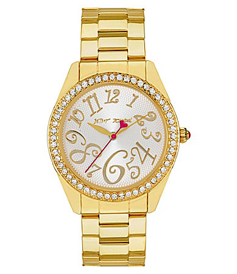
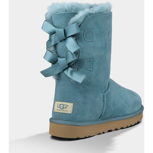

This iHome has an iPhone 5 adapter, dual-alarm, and Radio. You can also add a custom playlist, favorite stations, and wake and sleep your iPhone...Read More.

This watch makes a statement with a unique bold, yet classic, Betsy Johnson Style. Quartz movement, 40mm case, 2 year limited warranty, and 3 hand analog silver dial all included...Read More.

These classic shorts with a twist are perfect for this winter. With fixed, double bows in the back, they're cozy and dry in and outdoors. Made with durable material and added foam to ensure all day comfort...Read More.